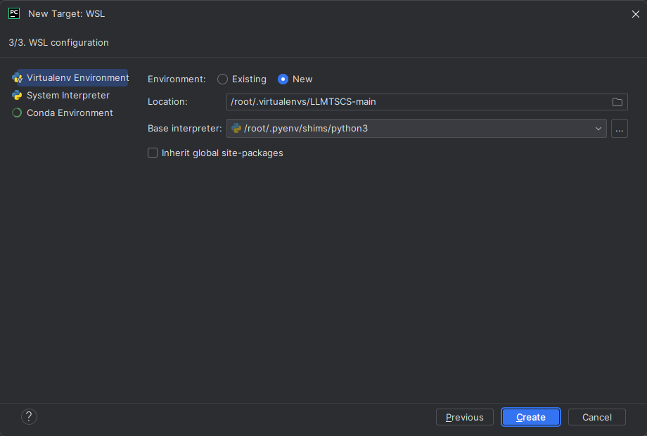
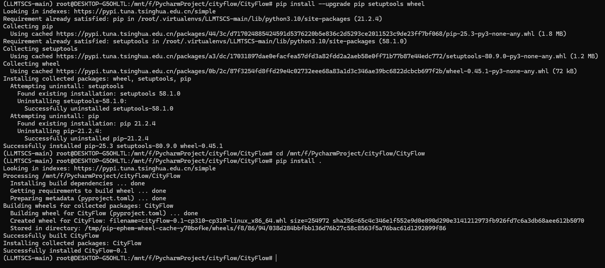
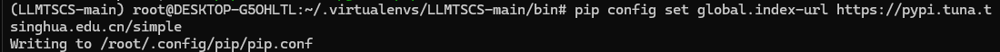
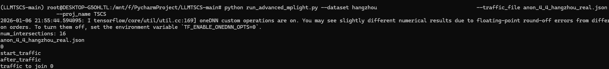
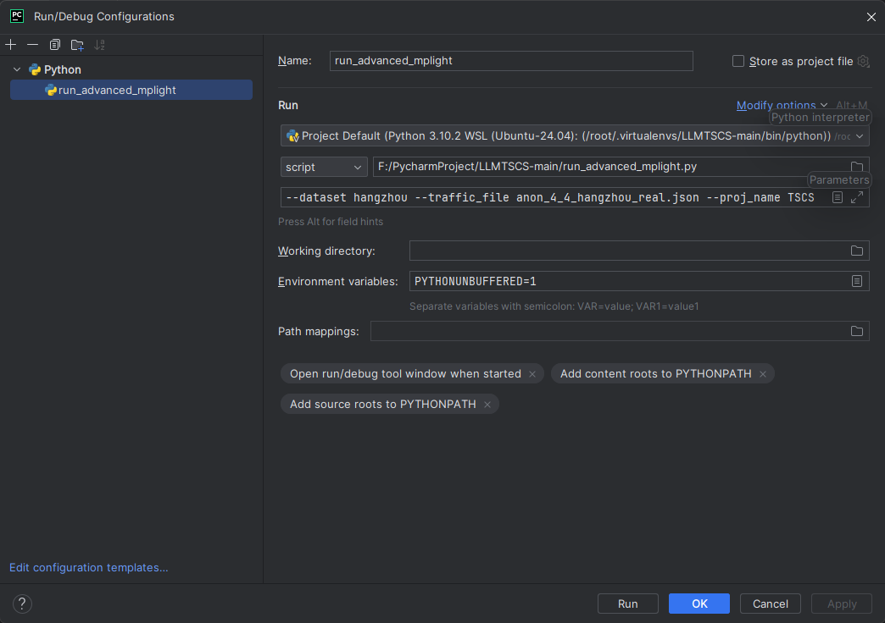
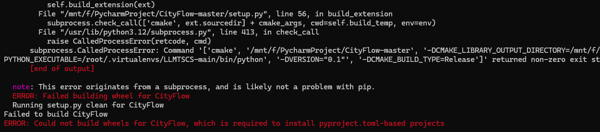
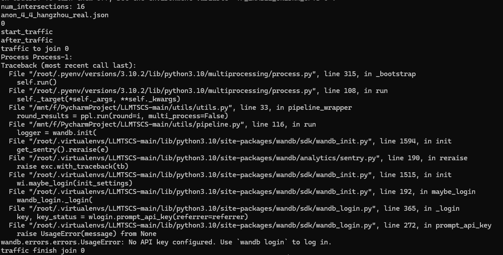

轻松在Windows上配置并运行LLMLight项目
轻松在Windows上配置并运行LLMLight项目
1. Introduction
近年来，基于强化学习的信号控制逐步迭代，已经发展出了基于大语言模型的LLMLight。LLMLight是一种将大型语言模型（LLM）作为TSC决策代理的新框架。传统的TSC方法主要基于交通工程和强化学习（RL），在不同交通场景下的泛化能力通常有限，并且缺乏可解释性。该框架首先通过提供包含实时交通状况的知识性提示来指导LLM。利用LLM强大的泛化能力，LLMLight进行类似人类直觉的推理和决策过程，以实现有效的交通控制。此外，该文章构建了LightGPT，一种专门为TSC任务定制的核心LLM。通过学习细微的交通模式和控制策略，LightGPT在成本效益方面增强了LLMLight框架。
LLMLight项目基于大语言模型进行信号控制，依赖cityflow仿真环境进行训练和测试，而cityflow又必须安装在linux操作系统下，交通工程专业的工程师或从业人员较难在短时间内从0开始配置完成整个项目。为此撰写一篇文章，希望教给读者从0开始在Windows上配置并运行LLMLight项目。
2. 准备工作
LLMLight项目依赖Linux环境，过往我们想要工作中使用Windows系统，并且还要临时跑Linux项目还是比较费劲的，需要使用虚拟机或安装双系统，两种方式都有痛点。但随着时代的进步，在Windows上配置并运行Linux项目成为可能。WSL（Windows Subsystem for Linux，适用于 Linux 的 Windows 子系统）是微软为 Windows 系统（如 Windows 10 和 Windows 11）引入的一项功能，允许用户在 Windows 上运行 Linux 操作系统及其相关命令和应用程序，而无需安装虚拟机或双系统。这就为我们的部署提供了便利。
系统要求：Windows 11 ，具备良好的网络环境
3. 系统篇
3.1 安装wsl 和 ubuntu 24.04
安装wsl并在该环境下配置ubuntu 24.04，可以参考这篇文章：Windows安装和配置Linux子系统（WSL2）
4 环境篇
4.1 安装python3.10环境
Ubuntu默认的python版本是3.12.3，经过实验，在这个版本下安装cityflow将会编译不成功，部分依赖（例如tensorflow-cpu）也会无法安装2.8.0版本。为了保持版本一致，我们首先应该安装python3.10环境，替换掉系统自带的python3.12 环境。在这一步，我们需要用到pyenv。
以下命令在ubuntu命令行中运行，建议直接复制粘贴命令
1 | |
到这一步，我们就已经安装好了python
3.10.2。需要指出的是，其中第三步安装编译依赖必须在安装python之前完成，特别是openssl、libssl-dev这些依赖，在后期编译cityflow时会使用到。
安装环境有了，我们接下来给项目创建一个venv环境。这一步可以在pycharm中完成。我使用的是pycharm
2023完整版，在windows环境下，打开LLMLight项目根目录，选择左上角的选项→Setting→Python Interpreter → Add Interpreter → on WSL...系统会自动检测WSL环境下安装的python，路径就按照默认给出的路径，这里我默认创建的路径是/root/.virtualenvs/LLMTSCS-main/

虚拟环境创建完成！
进入venv安装的目录下，默认情况下，创建的venv解释器位于
root/.virtualenvs/LLMTSCS-main/bin
输入命令source activate运行venv
4.2 安装项目所需的依赖
4.2.1 安装CityFlow
由于cityflow比较难安装，我们首先安装cityflow。
cityflow有两种方式进行安装：通过Docker安装和通过源码安装，这里我选择通过git安装。
首先在ubuntu上，安装所需的依赖：
sudo apt update && sudo apt install -y build-essential cmake
随后，在windows本地新建一个文件夹，从github上克隆代码到本地：
git clone https://github.com/cityflow-project/CityFlow.git
在Ubuntu中，进入CityFlow目录，通过pip方式安装：
cd CityFlow && pip install .
需要注意的是，安装依赖的时候，请确定自己是正所处于创建的虚拟环境venv中，而不是系统自带的python环境中。
当出现这个画面的时候，就意味着cityflow安装成功了！ 
4.2.2 安装其他所需的依赖
LLMLight文档中提到，项目的主要依赖有：
python>=3.9,tensorflow-cpu==2.8.0, cityflow, pandas==1.5.0, numpy==1.26.2, wandb, transformers==4.45.0, peft==0.7.1, accelerate==0.27.2, datasets==2.16.1, fire, vllm==0.6.2
除了上面所需要的依赖，经过实测，还需要安装依赖：protobuf==3.20.3
如果安装包下载太慢，可以先设置全局镜像源：
pip config set global.index-url https://pypi.tuna.tsinghua.edu.cn/simple

4.3 运行代码
经过配置完成，我们就可以运行代码了~

不仅可以在ubuntu中以命令行的方式运行代码，还可以在pycharm中配置运行的文件以运行代码。 
5 相关问题
5.1 安装依赖时报错
在安装pandas==1.5.0依赖的时候，会报错： 解决“Could not
build wheels for pandas”错误，大模型提供的解决方案有两个： 1.
安装必要的编译工具
在Linux上，你需要安装gcc和make。 sudo apt-get install build-essential
- 或者尝试 pip install pyproject
但是经过我尝试，两个方案都没有解决问题。 问题根源还是在于python的版本，不能太高，3.12就不行，甚至3.11都高了。 即使是python3.10，也装不上tensorflow==2.8.0，最后我安装的是TensorFlow==2.9.0
5.2 安装CityFlow时报错

这类报错大概率是前面的编译依赖环境没装好，建议重装python，并把编译依赖环境装上
5.3 wandb未配置
运行代码时报错： 
问题分析：这个错误表明 wandb（Weights & Biases）没有配置 API
key。wandb 是一个机器学习实验跟踪工具，需要登录才能使用。
解决方案：注册并登录wandb 1. 如果没有 wandb
账户，先注册：https://wandb.ai 2. 然后登录 wandb login 3.
运行后会提示你输入 API key，你可以在
wandb.ai/authorize获取。